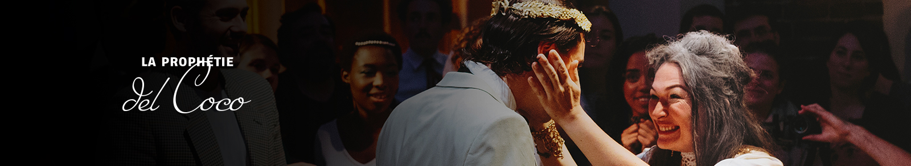

CRÉATION IMMERSIVE BACARDÍ
En 1960, avant de quitter Cuba, Diego et Mariposa, les héritiers Bacardí, font un pacte. Elle s'installera à Porto Rico pour y préserver le savoir-faire de la famille. Lui sillonera le monde pour initier le plus grand nombre au rhum Bacardí. Aidée par Les Compañeros, artisans du temps, Mariposa étudie l'art primordial qui compte dans la fabrication du rhum Bacardí : l'art du temps.
Mais ce soir, Mariposa est inquiète. Pour la première fois depuis sa séparation avec son frère Diego en 1960, celui-ci n'a pas écrit. Pis encore : pendant la cérémonie de floraison del Coco, l'arbre légendaire de la famille tombe malade. Mariposa doute, et Les Compañeros pensent alors qu'il est temps pour Mariposa de trouver un successeur. Ce successeur sera désigné au cours des traditionnelles olympiades...
Juin 2018
en partenariat avec
L'abus d'alcool est dangereux pour la santé. A consommer avec modération. Photos : Hands Studio.
avec le soutien de
Conception et production de spectacles immersifs